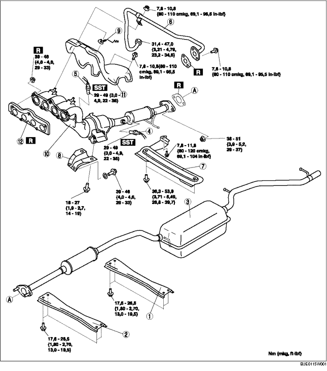

1. Die Batterieabdeckung ausbauen. (Siehe BATTERIE AUSBAUEN/EINBAUEN [ZJ, Z6].)
2. Das Massekabel der Batterie abklemmen.
3. Die untere Abdeckung ausbauen.
4. Gemäß der Reihenfolge in der Tabelle ausbauen.
5. Der Einbau erfolgt in umgekehrter Reihenfolge.

.
|
1
|
Hintere Halterung
|
|
2
|
Vordere Halterung
|
|
3
|
Hauptschalldämpfer
|
|
4
|
Nachgeschaltete beheizte Lambdasonde
|
|
5
|
Vorgeschaltete beheizte Lambdasonde
|
|
6
|
EGR-Leitung (Auslasskrümmerseite)
(Siehe Einbauhinweis für EGR-Leitung.)
|
|
7
|
Träger
|
|
8
|
Auspuffkrümmerhalterung
|
|
9
|
Sicherungsring
|
|
10
|
WU-TWC
(Siehe Einbauhinweis für Auspuffkrümmer.)
|
|
11
|
Auspuffkrümmer-Hitzeschild
|
|
12
|
Auspuffkrümmerdichtung
|
1. Die Vorderräder und Reifen abnehmen.
2. Für einfacheren Zugang folgende Verfahren anwenden.
Europa (LHD)3. Die EGR-Leitung (Ansaugkrümmerseite) entfernen. (Siehe LUFTANSAUGSYSTEM AUSBAUEN/EINBAUEN [ZJ, Z6].)
4. Das EGR-Ventil ausbauen. (Siehe EGR-VENTIL AUSBAUEN/EINBAUEN [ZJ, Z6].)
5. Die Lenkwelle vom Lenkgetriebe und -gestänge lösen. (Siehe LENKGETRIEBE UND -GESTÄNGE AUSBAUEN/EINBAUEN.)
6. Den Druckschlauch und Kraftstoffrücklaufschlauch lösen. (Siehe LENKGETRIEBE UND -GESTÄNGE AUSBAUEN/EINBAUEN.)
7. Die Gummilagerung des Motorlagers Nr. 1 entfernen. (Siehe MOTOR AUSBAUEN/EINBAUEN [ZJ, Z6].)
8. Die Schrauben am Auspuffkrümmer-Hitzeschild lösen.
9. Das Auspuffkrümmer-Hitzeschild so positionieren, dass sie nicht im Wege ist dann die Muttern des Auspuffkrümmers lösen.
10. Die Befestigungsschrauben des vorderen Stabilisators und des Vorderachs-Fahrschemels herausdrehen. (Siehe VORDERACHS-FAHRSCHEMEL AUSBAUEN/EINBAUEN.)
11. Die Befestigungsschrauben des Vorderachsfahrschemels lösen und den Vorderachsfahrschemel ca. 100 mm {3,94 in} absenken. (Siehe VORDERACHS-FAHRSCHEMEL AUSBAUEN/EINBAUEN.)
12. Das flexible Auspuffrohr mit ein Stützmantel oder Splint, wia abgebildet, stützen.
13. Den Auspuffkrümmer zusammen mit dem Hitzeschild entfernen, diesen dazu an der Unterseite des Fahrzeugs absenken.
1. Die Befestigungsmuttern des Auspuffkrümmers in der abgebildeten Reihenfolge festziehen.
1. Die Befestigungsschrauben und Muttern der EGR-Leitung in der abgebildeten Reihenfolge festziehen.